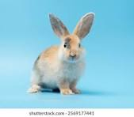

Le lapin est un petit animal aux longues oreilles. Il apartient à la famille de lagomorphes. On le trouve dans la nature et beaucoup des familles l'adoptent comme animal de compagnie. Dans la natureil vit en groupe. En famille il as besoin d'un congénére pour son équilibre.
Ses longues oreilles lui permettent d'entendre les bruits du loin.
La queue du lapin est un pompon.
Son pelage peut étre blanc, gris, brun ou tâcheté.
Un lapin tâcheté assis
